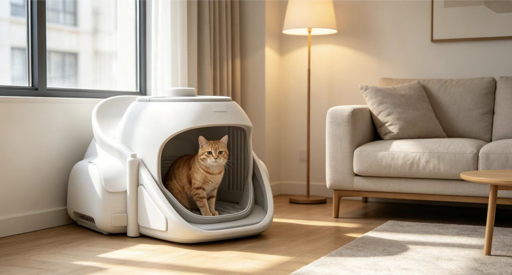
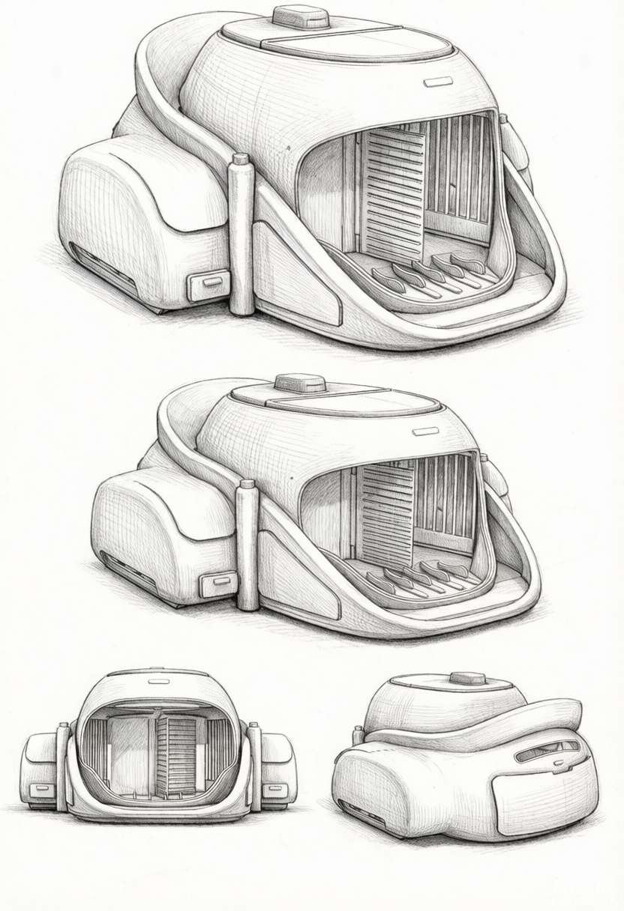
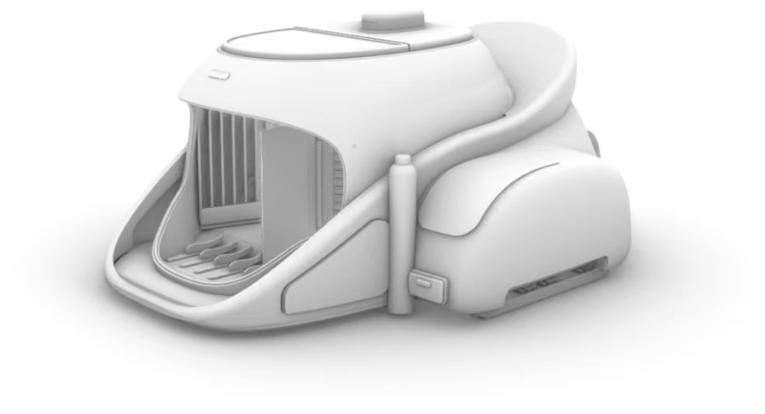
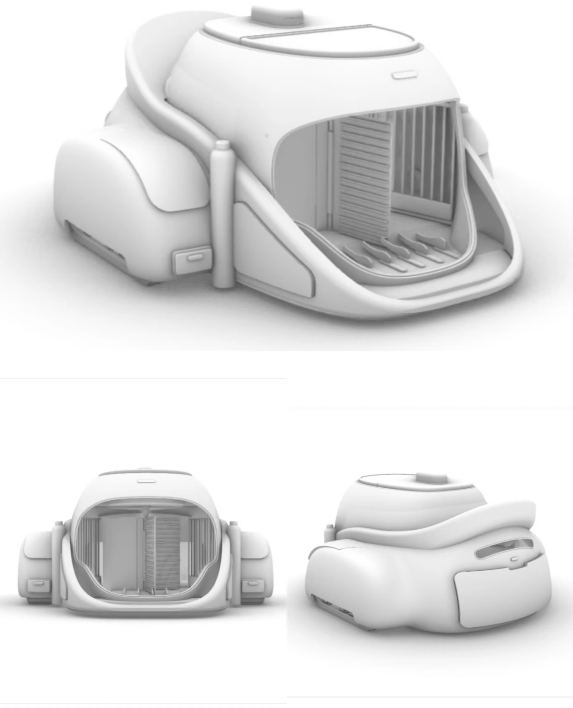

04 / Cat Nest
面向独居青年的智能猫窝
一款为独居青年设计的智能猫砂盆/猫窝一体化产品。它不止解决“猫砂臭味”，更试图降低主人外出时的焦虑：猫有没有上厕所、砂盆是否干净、猫是否安好。
JD 能力映射

01 / 项目目的
独居养猫的"气味焦虑"与"远程牵挂"
- 痛点：独居青年最怕两件事——下班开门闻到猫砂味、出差不知猫是否正常如厕；市面智能猫砂盆只解决自动铲砂，忽略气味隔离与远程可视。
- 项目目的：让猫砂盆像一件安静家具，融入小户型家，又让主人随时知道猫的状态。
73%
用户最在意气味控制
58%
曾因外出担心猫健康
12
位独居养猫青年访谈
34
条测试反馈
02 / 用户调研
从“猫的行为”到“人的情绪”
- 方法：12 位独居养猫青年访谈 + 4 只家猫行为观察。
- 洞察：猫偏好半封闭空间求安全，但需足够入口宽度避免触须疲劳；主人需异味不扩散、猫砂不带出、耗材易购。
- 方向：物理密封 + 活性炭滤盒（长效除味）｜低角度红外摄像头（看猫不刺眼）｜抽屉式砂仓 + 可拆洗内衬（降清理难度）。

“我不需要它多高科技，我需要的是——我加班回家，家里没有味道，打开手机能看到猫今天正常上了厕所。”
用户访谈 · 独居用户小林03 / 概念方案
三个方案，三种家居姿态
- 发散：三种与家居环境融合的方式，最终选「低趴家具感」。
- 取舍：A 圆柱塔式（不符猫习惯放弃）｜C 极简开放盘（气味与带出控制差放弃）｜B 低趴家具式（保留：融入家居·猫易接受）。
方案 A · 圆柱塔式
垂直结构省地，但猫不喜欢高处进出，且内部空间局促。
放弃原因：不符合猫的行为习惯
方案 B · 低趴家具式（最终）
横向低矮形态，半封闭舱体，顶部可作为小边几或猫休息台。
保留原因：融入家居、猫易接受
方案 C · 极简开放盘
开放式设计便于清洁，但气味完全无法隔离，猫砂带出严重。
放弃原因：气味与带出控制差

04 / 设计迭代
从素模到结构验证
- 素模验证：泡沫模型测猫是否愿进半封闭舱体，再导入 Rhino 细化舱体弧度与入口高度。
- 纠偏：第一轮入口太矮蹭头 → 第二轮入口侧边斜切进出更自然 → 第三轮顶部加透气格栅降封闭感。


05 / 最终方案
低趴、可呼吸、可看见
- 形态：横向低矮舱体，轮廓柔和可作客厅边几；斜向宽阔入口；舱内活性炭滤盒 + 低角度摄像头；底部抽屉式砂仓。
- 要点：半封闭舱体（安全感 + 顶部格栅通风） / 活性炭滤盒源头控味 / 低角度红外摄像头 / 抽屉式砂仓 / 家具化外观。
06 / 验证与沉淀
12 位用户，34 条反馈
- 测试：12 位目标用户观察猫对新砂盆接受度，收集反馈。
- 结果：气味满意度 4.5/5 · 83% 猫 48h 内适应 · 78% 认为可融入家居（详见数据卡）。
- 沉淀/优化：App 交互待优化。
4.5/5
气味控制满意度
83%
猫在 48h 内适应
78%
认为外观可融入家居
3
待优化：App 交互